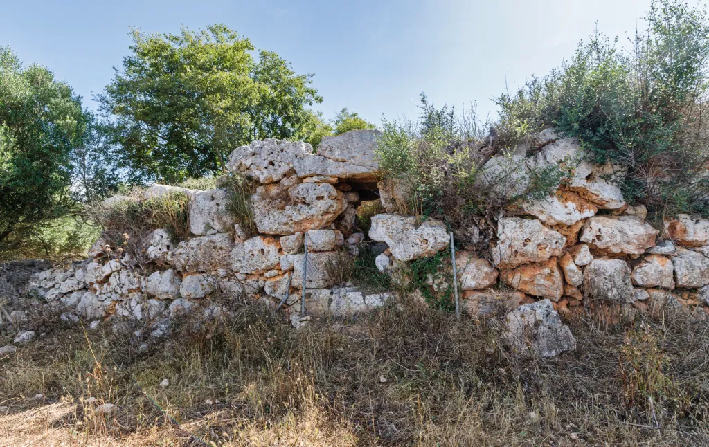
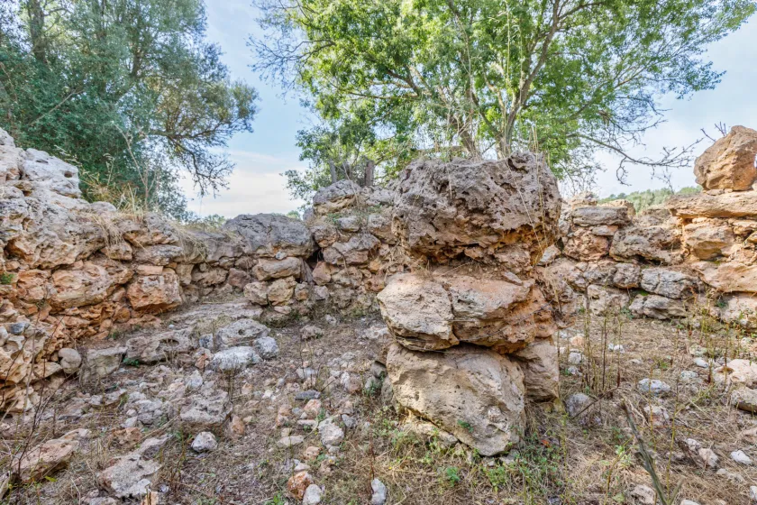
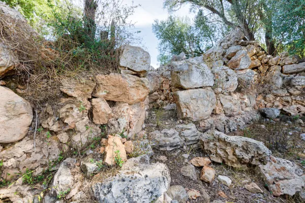
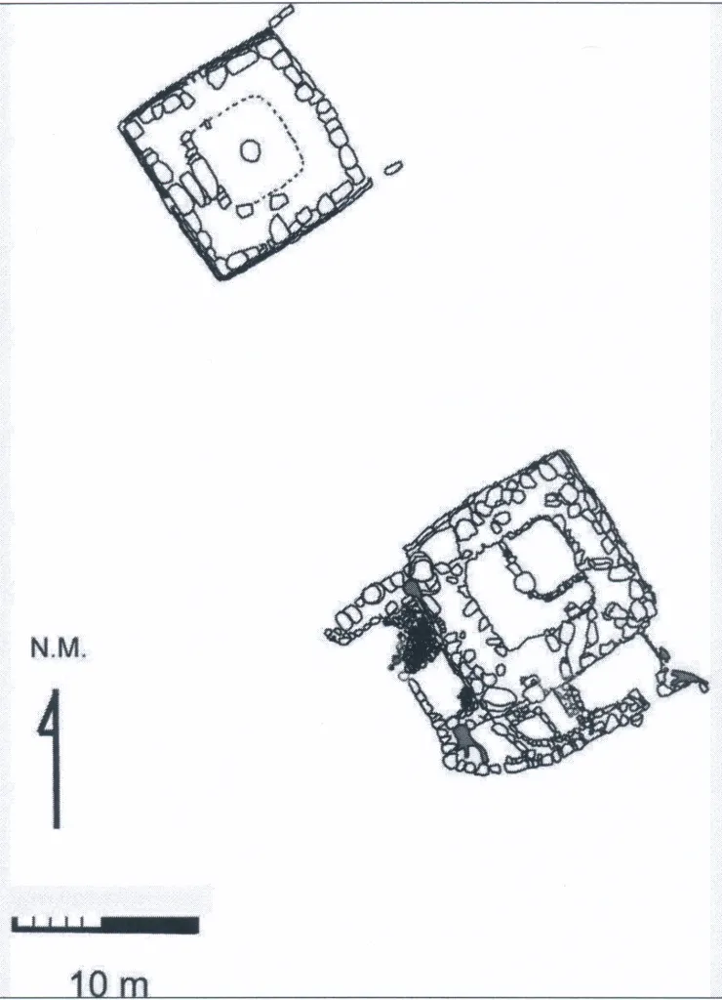

Ses Talaies de Ca´n Xim o talayots de Cascanar esta integrado por dos talayots de planta cuadrada y dos recintos adosados al talayot sur. Estan situados a poca distancia del poblado talayótico de Cascanar, en el municipio de Sencelles.
Todo parece indicar que estos talayots fueron construidos por los habitantes del poblado de Cascanar con una función ritual y ceremonial. El uso funerario se encuentra avalado por el hallazgo del esqueleto de una mujer. En cambio, el uso como lugar de vivienda no está corroborado por los restos encontrados en las excavaciones. De todas formas habría que excavar el resto del yacimiento con el fin de poder establecer una interpretación más consistente.
Es un talayot de planta cuadrangular, formado por piedras de tamaño ciclópeo, de unos 11 metros de lado y 2,8 metros de altura máxima. Tiene una puerta de 2 metros de altura y 1,1 metro de ancho, con un magnífico dintel, orientada a 260 º. El corredor adopta forma sinuosa. El talayot no esta excavado y precisa de una limpieza ya que la vegetación lo cubre parcialmente. En su edificación debieron intervenir elementos religiosos y políticos que expresan la existencia de una estratificación social.
El talayot sur es muy parecido al talayot norte y tiene unas dimensiones de 10,8 metros de lado, con una altura máxima de unos 2,8 metros. La puerta también es sinuosa pero con una orientación hacia el sureste que contrasta con la del talayot norte y que, en un primer análisis, debía tener tres efectos: hacer invisible el interior desde el exterior -y a la inversa- , reducir la entrada de luz y hacer más fácil la defensa. La columna de la cámara central presenta un buen estado después de la excavación y limpieza. Se observa nítidamente la planta cuadrada y los acabados interiores de los muros perimetrales. En la excavación se encontraron varios troncos quemados que aún mantenían la forma radial en relación a la columna. También se encontraron restos de losas. Tales elementos constructivos hacen pensar en una cubierta en terraza sostenida por maderas. En el paramento interior del muro perimetral del talayot sur de Cascanar se ve muy bien la forma de bóveda de la pared que, por aproximación de hiladas desde cada lado, va reduciendo la distancia en relación a la columna central y, por tanto, haciendo más fácil la cobertura superior de la edificación.
 Este yacimiento esta incluido en la propuesta de «La Ruta Arqueològica Sencelles Costitx» Esta ruta permite hacer un viaje al pasado prehistórico de los municipios de Sencelles y Costitx y conocer sus yacimientos más emblemáticos.